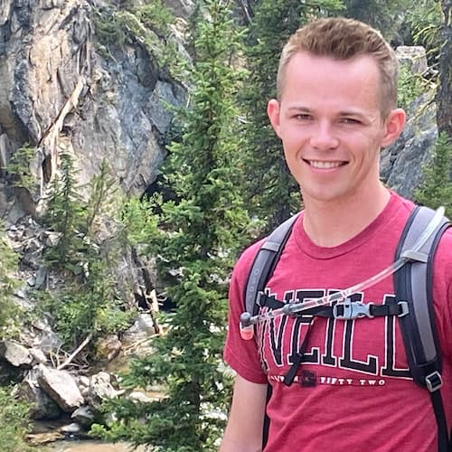

Riley Sean Armstrong | WDD 130
I'm just a guy who likes pickleball, wants to finish school, and make enough money to more easily raise a family. I began college shortly after my mission around nine years ago. After a variety of mental health issues and traumatic experiences, I slowed down in my pursuit of higher education and attempted to seek healing through God and trusted others. I'm happy to report that I've made some progress and have hope for more to come.